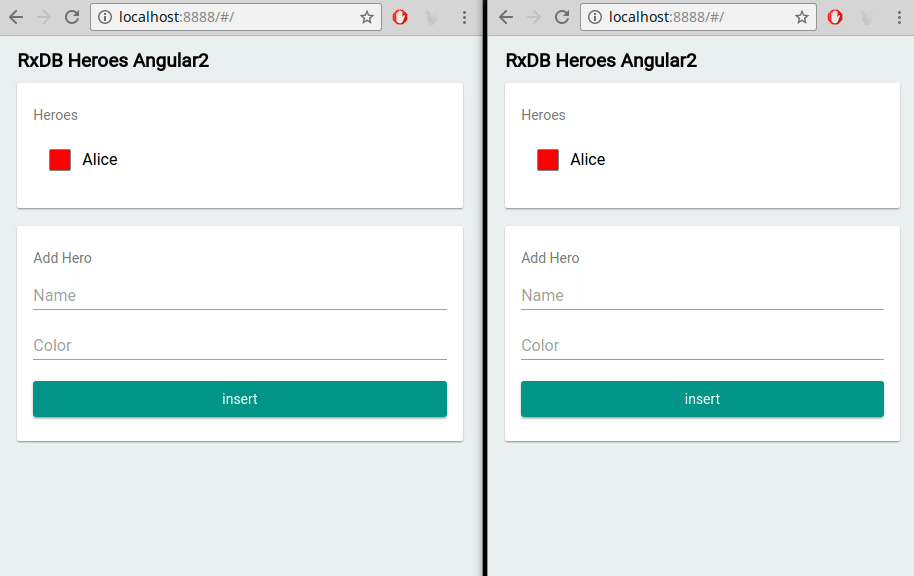

RxDB as a Database for Progressive Web Apps (PWA)
Progressive Web Apps (PWAs) have revolutionized the digital landscape, offering users an immersive blend of web and native app experiences. At the heart of every successful PWA lies effective data management, and this is where RxDB comes into play. In this article, we'll explore the dynamic synergy between RxDB, a robust client-side database, and Progressive Web Apps, uncovering how RxDB enhances data handling, synchronization, and overall performance, propelling PWAs into a new era of excellence.
What is a Progressive Web App
Progressive Web Apps are the future of web development, seamlessly combining the best of both web and mobile app worlds. They can be easily installed on the user's home screen, function offline, and load at lightning speed. Unlike hybrid apps, PWAs offer a consistent user experience across platforms, making them a versatile choice for modern applications.
PWAs bring a plethora of advantages to the table. They eliminate the hassle of app store installations and updates, reduce dependency on network connectivity, and prioritize fast loading times. By harnessing the power of service workers and intelligent caching mechanisms, PWAs ensure users can access content even in offline mode. Furthermore, PWAs are device-agnostic, seamlessly adapting to various devices, from desktops to smartphones.
Introducing RxDB as a Client-Side Database for PWAs
At the heart of PWAs lies efficient data management, and RxDB steps in as a reliable ally. As a client-side NoSQL database, RxDB seamlessly integrates into web applications, offering real-time data synchronization and manipulation capabilities. This article sheds light on the transformative potential of RxDB as it collaborates harmoniously with PWAs, enabling local-first strategies and elevating user interactions to a whole new level.
Getting Started with RxDB
RxDB emerges as a reactive, schema-based NoSQL database crafted explicitly for client-side applications. Its real-time data synchronization and responsiveness align seamlessly with the dynamic demands of modern PWAs.
Local-First Approach
The cornerstone of RxDB's philosophy is the local-first approach, empowering PWAs to prioritize data storage and manipulation on the client side. This paradigm ensures that PWAs remain functional even when offline, allowing users to access and interact with data seamlessly. RxDB bridges any gaps in data synchronization once network connectivity is restored.
Observable Queries
Observable queries (aka Live Queries) serve as the engine of RxDB's dynamic capabilities. By leveraging these queries, PWAs can monitor and respond to data changes in real time. The result is an engaging user interface with instantaneous updates that captivate users and keep them engaged.
await db.heroes.find({
selector: {
healthpoints: {
$gt: 0
}
}
})
.$ // the $ returns an observable that emits each time the result set of the query changes
.subscribe(aliveHeroes => console.dir(aliveHeroes));Multi-Tab Support
RxDB extends its prowess to multi-tab scenarios, guaranteeing data consistency across different tabs or windows of the same PWA. This feature promotes a seamless transition between various sections of the application, while minimizing data conflicts.

Using RxDB in a Progressive Web App
Integrating RxDB into a Progressive Web App, driven by technologies like React, is a straightforward process. By configuring RxDB and installing the necessary packages, developers establish a solid foundation for robust data management within their PWA.
Exploring Different RxStorage Layers
RxDB caters to diverse needs through its various RxStorage layers:
- LocalStorage RxStorage: Leveraging the capabilities of the browser's LocalStorage API for storage.
- IndexedDB RxStorage: Tapping into the browser's IndexedDB for efficient data storage.
- OPFS RxStorage: Interfacing with the Offline-First Persistence System for seamless persistence.
- Memory RxStorage: Storing data in memory, ideal for temporary data requirements. This flexibility empowers developers to optimize data storage based on the unique needs of their PWA.
Synchronizing Data with RxDB between PWA Clients and Servers To facilitate seamless data synchronization between PWA clients and servers, RxDB offers a range of replication options:
-
RxDB Replication Algorithm: RxDB introduces its own replication algorithm, enabling efficient and reliable data synchronization between clients and servers.
-
CouchDB Replication: Leveraging its roots in CouchDB, RxDB facilitates smooth data replication between clients and CouchDB servers, ensuring data consistency and synchronization across devices.
-
Firestore Replication: RxDB synchronizes data with Google Firestore, a real-time cloud-hosted NoSQL database. This integration guarantees up-to-date data across different instances of the PWA.
-
Peer-to-Peer (P2P) via WebRTC Replication: RxDB supports P2P replication, facilitating direct data synchronization between clients without intermediaries. This decentralized approach is invaluable in scenarios where server infrastructure is limited.
Advanced RxDB Features and Techniques
Encryption of Local Data
RxDB empowers PWAs with the ability to encrypt local data, enhancing data security and safeguarding sensitive information. This feature is indispensable for applications handling user credentials, financial transactions, and other confidential data.
Indexing and Performance Optimization
Performance optimization is a top priority for PWAs. RxDB addresses this concern by offering indexing options that expedite data retrieval, resulting in a snappier user interface and heightened responsiveness.
JSON Key Compression
RxDB introduces JSON key compression, a feature that reduces storage requirements. This optimization is particularly beneficial for PWAs dealing with substantial data volumes, enhancing overall efficiency and resource utilization.
Change Streams and Event Handling
RxDB introduces change streams, enabling PWAs to react to data changes in real time. This capability empowers dynamic updates to the user interface, promoting interactivity and engagement.
Conclusion
In the ever-evolving landscape of web application development, Progressive Web Apps continue to redefine user experiences. RxDB emerges as a pivotal player, seamlessly integrating with PWAs and enhancing their capabilities. With features like the local-first approach, observable queries, replication mechanisms, and advanced encryption, RxDB empowers developers to create responsive, offline-capable, and data-driven PWAs. As the demand for sophisticated PWAs continues to surge, RxDB remains an indispensable tool for developers aiming to push the boundaries of innovation and redefine the standards of user engagement. By embracing RxDB, developers ensure their PWAs remain at the forefront of the digital revolution, offering seamless and immersive experiences to users around the world.
Follow Up
To explore more about RxDB and leverage its capabilities for browser database development, check out the following resources:
- RxDB GitHub Repository: Visit the official GitHub repository of RxDB to access the source code, documentation, and community support.
- RxDB Quickstart: Get started quickly with RxDB by following the provided quickstart guide, which provides step-by-step instructions for setting up and using RxDB in your projects.
- RxDB Progressive Web App in Angular Example